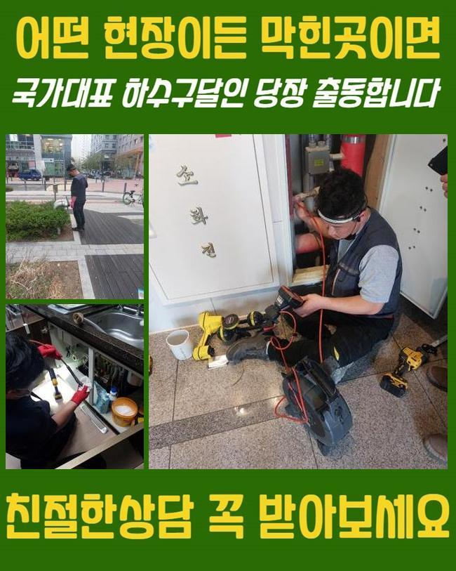
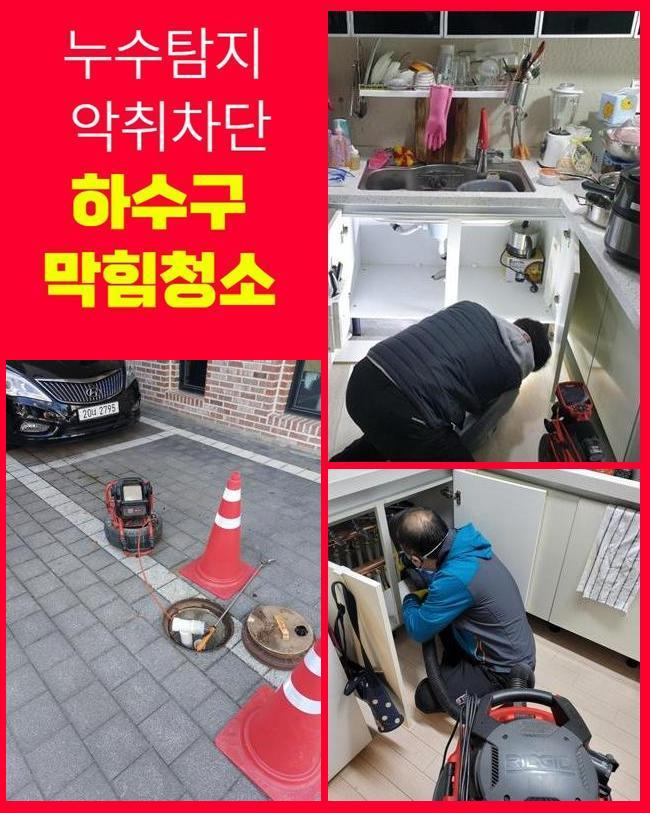
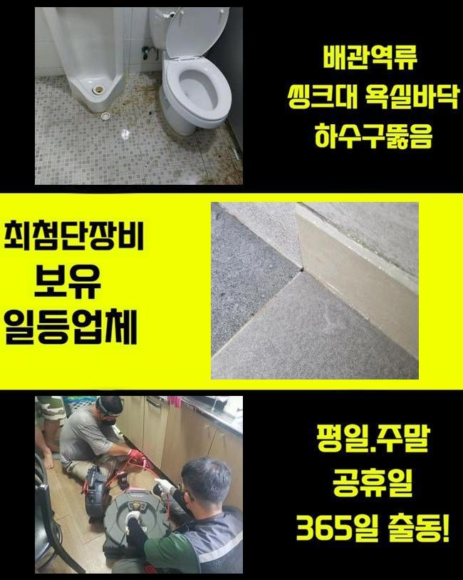
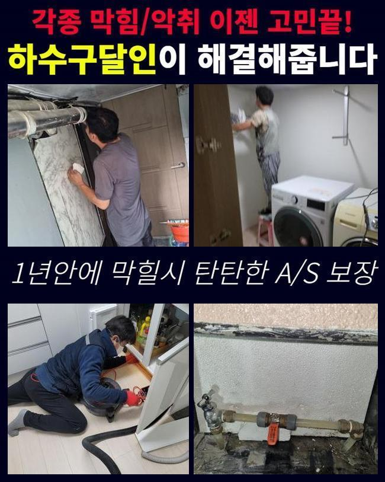
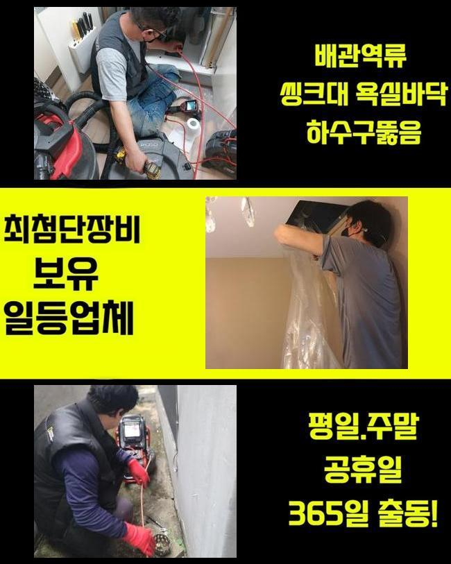
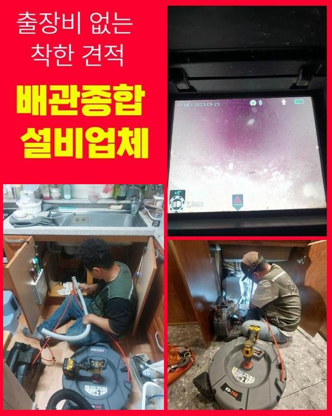

🏠 이천 중리동변기뚫음 율면 횡주관청소 배관설비공사
용인 싱크대막힘 전문 시공 후기

📋 작업 개요
- 위치: 용인
- 서비스 유형: 싱크대막힘, 변기막힘, 하수구막힘, 배관막힘, 누수수리, 역류해결, 뚫는업체, 배관청소, 설비공사, 악취차단
- 작업 일시: 2025. 5. 27. 18:12
- 업체명: 하수구수사대 (010-5615-2118)
🔍 문제 상황
이천 중리동변기뚫음 율면 횡주관청소 배관설비공사
문제 없이 집에서 생활하다가 전조 증상도 없이 배관에 특정 문제점이 생기면 굉장한 불편함을 겪을 수 있어요
현대인은 식사 시간까지 줄여가며 분주하게 생활하는데 그 와중에 갑자기 다른 곳에 시간을 빼앗기게 되면 일상에 큰 차질이 생기게 마련이죠
당혹스러운 일을 마주하면 조속한 조치를 해달라고들 하십니다
하수구 마비를 겪은 고객님의 어려운 마음을 파악하므로 즉각적인 내방과 상쾌한 하수기능 회복을 약속 드릴 수 있어요
오늘 현장 역시 예상하지 못했었던 통수 마비로 인해 고객님이 직접 찾아주신 것이었어요
평소와 다를 바 없는 날을 지내는 와중에 싱크대가 있는 바닥에서 물기가 배어나오는 기가 막힌 모습을 겪으셨다고 합니다
당일 저녁부터 시설물을 작동해야만 했기에 이왕이면 당일에 고장난 설비를 고치고 싶으셔서 더 막히기 전에 빠르게 찾아올 수 있냐 물으셨어요
접수를 받고서 즉각적으로 고객님 근처로 이동하여 조속한 배관 정비를 처리하기로 했습니다
주변을 두루 살핀 후에 싱크대가 막힌 오류들을 점검해 봤어요
주방의 물이 아예 배출되지 못했고 울컥대면서 아래에서 솟구쳐서 급한 마음으로 고객분이 침수 피해를 제어하기 위해서 패브릭 천을 내려놓으신 것 같았어요

🔎 원인 분석
💡 전문가 진단: 정밀 진단 장비를 사용하여 슬러지의 고착 여부를 판명하고 타격/세척 작업을 실시했습니다.
기다란 배수구 속에서 울컥대며 나오는 물을 보자면 대개 각종 찌꺼기가 희석되어있으니 여기저기로 이동하면 닦아내는 작업에도 시간적인 자원과 공이 들어가게 됩니다
수도시설 쪽에서 흘러져 나오는 물이라면 밸브를 통해 컨트롤이 가능합니다
역류 증세가 있다면 전체적인 고인 물들이 배출될 때까지 계속해서 물이 스며나오니 계속되는 고충을 촉발하게 됩니다
불쾌한 냄새로 짐작해보자면 오래 묵어있던 부패한 각종 찌꺼기들이 싱크대 곤란의 원인일 것이 분명했어요
올바른 검사를 위하여 위에 고인 물들을 없애주고서 내면의 상황을 자세히 들여다 볼 필요가 있어 보였어요
석션 장치를 써서 자잘한 찌꺼기들을 몽땅 흡수한 다음 배관의 상황을 다시금 관찰해보기로 정했습니다
석션으로 엄청난 물이 방출되긴 했는데 기대와는 다르게 기름덩어리나 찌꺼기들은 거의 수집되지 못한 상태였어요
그러므로 막혀있는 파트를 직접 내시경기로 들여다 봐야 할 상황이었습니다
실시간 모니터링이 가능한 내시경을 넣어서 얼마나 오염되어 있는지 관측해보기로 했어요
특수 내시경이기 때문에 이물질의 양과 특성을 이곳저곳 낱낱이 체크할 수 있기에 막힌 근원을 수월하게 다 알아내게 해주는 장치라고 할 수 있어요
내부를 살피지 않고 단순히 꺼내진 이물질만으로 막힌 동기를 추적하는 경로의 작업이 아닌 내시경을 넣음으로써 구불구불한 관로 구역까지 직접 검사하면서 배관에 대한 정보들을 진단해 볼 수 있게합니다

🔧 작업 과정
내시경 사용으로 현상황을 분석해보니 기름 슬러지들이 틈도 없이 밀착된 채 한 몸이 되어버려서 단지 석션만 가동해서는 수습이 이뤄지지 못했던 상황이더라고요
거기다 음식물들이 곰팡이가 피고 썩고 가스를 방출하니 불쾌한 냄새까지 도래한 것이라고 알아낼 수 있었네요
머무른지 한참되었으니 기름기가 굳어서 큰 암석처럼 고착화가 되어있었습니다
묵은 침전물이 존재하면 간단한 스킬로는 수습이 어려우므로 디테일한 기능의 기기들이 힘을 더해주어야 해요
내부에 고인 찌꺼기들을 하나하나 체크해두고 회전력 기반의 샤프트 기계를 세팅했어요
이 기기로 말하자면 잘 휘어지는 노즐이 보기도 힘든 내부까지 진출해서 슬러지를 잘게 썰 수 있도록 설계된 기기입니다
이러한 샤프트의 끝 쪽에 위치한 사슬 형상의 헤드가 진동하면서 긁어내고 해체시키면서 파편화를 시켜줍니다
조심할 부분은 과정 중 배관 몸체에도 손상을 가할 수 있으므로 적당한 강도로 섬세하게 긁어내고 있습니다
공들여서 분쇄를 해주었고 시공을 거치면서 딱딱하게 메말라 있던 슬러지들을 분해해버릴 수 있었고 더 깔끔하게 하기 위해 잘게 분할된 파편들도 거두어 들였습니다
이 과정에서 찌꺼기 잔량을 방치해 버린다면 하수구가 도로 차단될 위험성이 있으므로 시간이 걸리더라도 꼼꼼히 담당하게 되었습니다
강력하게 말라붙은 슬러지화 뭉치는 샤프트를 돌려 척결하고 다음 주자 석션기로 잔해를 수거까지 해줘야 새로운 배관차단을 차단할 수 있어요
샤프트 석션 콤비는 작동 원리와 기능을 발휘할 수 있도록 경우에 맞게 사용을 하고 있고 이 작업을 통해 맑아진 하수구 모습을 결론을 얻으실 수 있어요
싱크대에 달려있는 배관덮개나 주름 호스도 새걸로 갈아주는 일도 필요하지 않나 싶었어요
현장에 달려있던 주름관의 경우는 얼핏 봐도 더러워져 있었고 자잘하게 갈라져서 누수가 생길 여지가 충분한 모습이라고 느껴졌습니다
주름관의 노후화에 관련한 문제점을 소개 해드린 다음에 차선의 문제인 배관 트랩의 문제점도 보여드리며 어떤 문제가 있나 말해드렸어요
현장 배관의 구성품들까지 진단을 같이 내리고 수시로 교체를 해준다면 파손으로 인한 문제까지 차단할 수 있어요
향긋한 주방을 위해서 크기가 딱 맞는 새 주름배관과 덮개로 바꾸어 달아드렸습니다


✅ 작업 완료
현장에 꼭 들어맞는 적용되는 새 호스를 움직임없이 탄탄하게 연결지어드렸고 흐물거리는 주름관은 새걸로 갈아서 쾌적한 배수 조건을 만들어주었습니다
전반적인 시공을 다 달성하고 나서는 기능이 회복됐나 보려고 파이프 통수 검사를 돌입해서 개수대 안에서 콸콸 튼 수돗물이 잘 콸콸 흘러흔적없이 사라지는지 들여다 보는 시간을 가졌어요
새걸로 바꾸어 달아드린 주름호스도 똑바로 설치됐나 들여다 보면서 앞선 하수구 작업들이 깔끔하게 끝났는지 여러 차례 확인했네요
주방 싱크대 내부에서 수돗물이 눈에 띄게 느려지거나 물이 울컥대며 튀어오르면 원인 규명과 꼼꼼한 처리가 적용되어야 할 것입니다
사건 접수만 해주시면 열정을 다하여 도움을 드리겠습니다



⚠️ 베란다 누수 및 방수 관리 방법
- ✅ 비가 많이 올 때 창틀 주변이나 아래층 천장에 얼룩이 생기는지 정기적으로 확인해 보세요.
- ✅ 우수관 주변 실리콘 마감이 들뜨거나 깨진 틈새가 있는지 손상 여부를 수시로 체크하세요.
- ✅ 베란다 바닥 타일의 줄눈(메지)이 소실되면 그 틈으로 물이 침투하여 누수가 유발됩니다.
- ✅ 누수 의심 증상 발견 시 방치하면 아래층 손실이 커지므로 즉시 전문가의 진단을 받으십시오.
💡 핵심 정리
- 확실한 장비 작업(내시경 점검 및 샤프트 스케일링)으로 원인을 뿌리 뽑습니다.
- 작업 후 1년 이내에 동일한 부위 재발 시 100% 무상 A/S 서비스를 보장합니다.
- 서울 · 경기 · 인천 전 지역에 24시간 언제든 긴급 출동할 수 있도록 항시 대기 중입니다.
❓ 자주 묻는 질문 (FAQ)
🚨 용인 싱크대막힘 문제로 고민이신가요?
정확한 원인 진단과 확실한 시공으로 재발 없는 해결을 약속드립니다.
24시간 긴급 출동 | 서울 · 경기 · 인천 전지역 | 1년 내 재발 시 무상 A/S